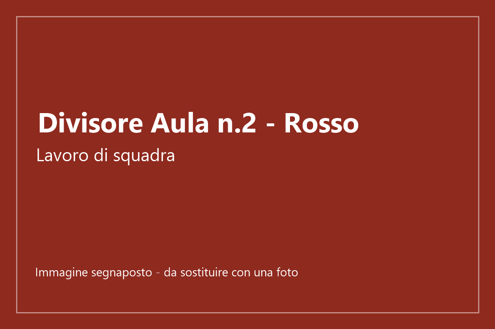

Le soluzioni migliori nascono quasi sempre dal confronto: in ITS si impara anche a lavorare insieme.
Il teamworking, la comunicazione efficace e la capacità di organizzare un progetto sono competenze trasversali presenti in tutti i percorsi ITS Academy (istituto tecnico superiore).
Nella cybersecurity sono particolarmente importanti: un incidente informatico va gestito con ruoli chiari, informazioni condivise e decisioni rapide.
Qui puoi scoprire come il lavoro di squadra trasforma un problema complesso in un obiettivo raggiungibile.

Ultimo aggiornamento: 13/11/2026